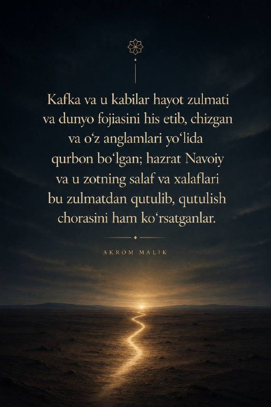

Hayotiy tajriba va ilm boyligiga qarab mumtoz matnlar turli yoshlarda turli…

Hayotiy tajriba va ilm boyligiga qarab mumtoz matnlar turli yoshlarda turli qirralarini ko‘rsatadi.
Kafkaning “Jarayon”ini tugatdim. So‘zboshida asar uslubi mijg‘ov, ezma uslub deyilibdi, negadir. Aksincha, menga yoqdi. Inglizchasini ko‘rdim. Tarjimon Vafo Fayzullohga ofarin aytdim. Asar ruhini his qilgan tarjimon ona tilimizda buni komil shaklda aks ettira olgan deb o‘ylayman.
Muallif jamiyat ruhini va inson nafsini teran ko‘ra olgan va yoritgan, faqat u umidsiz va qora rangda ko‘rgan. Umid va nur topa olmagan. Shubhasiz, iymon-e’tiqodsiz jamiyatlar Yozef K.larni qatl qiladi. Jamiyatning asl yuzini ko‘rganlarda ikki yo‘ldan biri qoladi: yo qatlga rozilik, yo hamoqat ahlining biriga aylanish. Oqmagan suv aynigani kabi hamoqat botqog‘iga botish bir qism sassiq balchiqqa evrilish degani.
Kafkani Sharq adabiyoti bulog‘idan suv ichib o‘qish kerak deb o‘ylayman. Aks holda, tushkunlik odamni asir qiladi. Kafka yirik shaxsiyat deb xulosa qildim. Masalan, Hemingway ham. Lekin Kafka Hemingwaydan ham ulkan figura ko‘rindi. Afsuski, u chirkin muhitga sig‘magan va halok bo‘lgan.
Aslida, bu chirkin muhit – inson uchun sinovdir, undan salomat qolish yo‘li bor. Bu yo‘lning bir xaritasi hazrat Navoiyda. Endi bu katta masala. Hozir qisqa aytsak bo‘ladiki, Kafka va u kabilar hayot zulmati va dunyo fojiasini his etib, chizgan va o‘z anglamlari yo‘lida qurbon bo‘lgan; hazrat Navoiy va u zotning salaf va xalaflari bu zulmatdan qutulib, qutulish chorasini ham ko‘rsatganlar.
Gapimni shu yerda yakunlayman desam, “Alvido, Qurol” haqida ham aytgim kep qoldi. Nazokatli, o‘ta puxta badiiy asar. Hemingway qoni qaynoq adib. So‘zlari ham haroratli. “Alvido, Qurol”ning bosh qahramoni va Yozef K. shu qadar o‘xshashki! Ammo askarni sevgi asir qiladi, ishq hayotini yoritib yuboradi, aks holda, u ham halok bo‘lardi, zulmat uni ham sirtmoqqa tiqardi. Asar so‘nggida Ketrin tug‘ruqdan keyin o‘ldi. Askar uchun hamma yoqni zulmat bosdi. Aybdorni hech kim bilmaydi.
Hemingway dunyo qanday shaklda yashama, seni o‘ldiradi deb yozadi. Ikkiyuzlamachi bo‘lsang, sekin, rostgo‘y bo‘lsang, tezda joningni oladi. Bu gaplar Alisher Navoiy hazratlarining dunyoning asl basharasi haqida gaplarini eslatdi. Hayratul abrorda shu haqida maxsus bob bor, qarab qo‘yarsizlar.
Sharqda bo‘lsin, G‘arbda bo‘lsin, mutafakkir va uyg‘oq odamlar hayot haqiqati va zamona fojiasini aniq va ravshan idrok etdilar, lekin nur va yorug‘lik Sharqda, bu tarafkashlik emas, nazarimda, bu oydin haqiqat. Bu yolg‘iz kaminaning fikri emas.
Darvoqe, gap gapni chaqiradi – kuni kecha Prezident san’at va madaniyat ahlini mukofotladi. Hamma xursand bo‘ldi. Shu hodisa haqida turli fikrlar yangradi, ayrim toifalar ziyoli va intellektual degan atamani muhokama qilishdi. Ayrim xoinlar o‘z repetuaridan chiqmay ichqoralik bilan shug‘ullandilar. Intellektual jamiyat muammolariga yechim bergan odam ekan. Ziyoli hokimiyat ahliga ko‘rgan haqsizligi haqida shartta gapirib tashlashi kerak ekan. Menimcha, Kafka ham, Hemingway ham bunday qilishmagan, chunki bu juda bir jaydari va rustoyi yondashuv, xolos. Zulm va haqsizlikni yalangʻoch gapirish bilan masala hal bo‘lmasligini tushunishgan. Ular zulm va haqsizlikning butun manzarasini ko‘rishga intildilar, keyin mohiyatini izladilar, manzarani his etib, uni chizib berdilar; lekin mohiyatiga tushunmadilar. Bu jumboqni yecha olishmadi.
Maddohlik boshqa narsa, yaxshi so‘z va e’tirof boshqa narsa. Maddohlik tama ustiga quriladi. Yaxshi so‘z va e’tirof samimiyatdan o‘sib chiqadi. Kechagi taqdirlashda men Prezidentning millat va xalq dunyoqarashi, fikrlashini qanday o‘stirsam ekan degan qayg‘usi hamda shu yo‘ldagi jonbozligini, urinishini ko‘rdim. Va bu harakatga muqobil tarzda ijod ahlining e’tirofi, samimiyati va javobiga guvoh bo‘ldim. Aytilgan so‘zlarning aksari samimiy va tuyg‘uga to‘la holda yangradi. Prezident ham maqtovlarga uchadigan davrdan o‘tganiga ancha bo‘lgan. Shu sababli hodisani bu qadar jo‘n tahlil qilib, masalani bu ko‘rlik ila baholashayotganiga hayron qoladi odam, aslida, hayron qolishga hojat yo‘q.
Bu harakat va islohot qanday meva beradi – bu boshqa masala, kelajakda ma’lum bo‘ladi, hozircha yaxshi umidlar qilinmoqda, xolos.
Gap Kafkadan boshlangan edi va o‘zini elita intellekt sanaydiganlarni ham zikr etgan edik, hozir meni ikki masala o‘ylantirib turibdi: ularning chalasavodligini ochiq aytsam, men ham rustoyi bo‘lib qolamanmi? Ular-ku, buni qabul qilishmaydi. Ikkinchi muammo – senlar chalasavodsanlar desam, o‘zimni ulardan aqlliroq bilgan bo‘lib qolsam kerak...
Endi yana kim biladi deysiz. Bunchalik ezmalanmay, gapni aytib ketavergan ma’qulga ham o‘shaydi. Gap egasini topadi.
Akrom MALIK